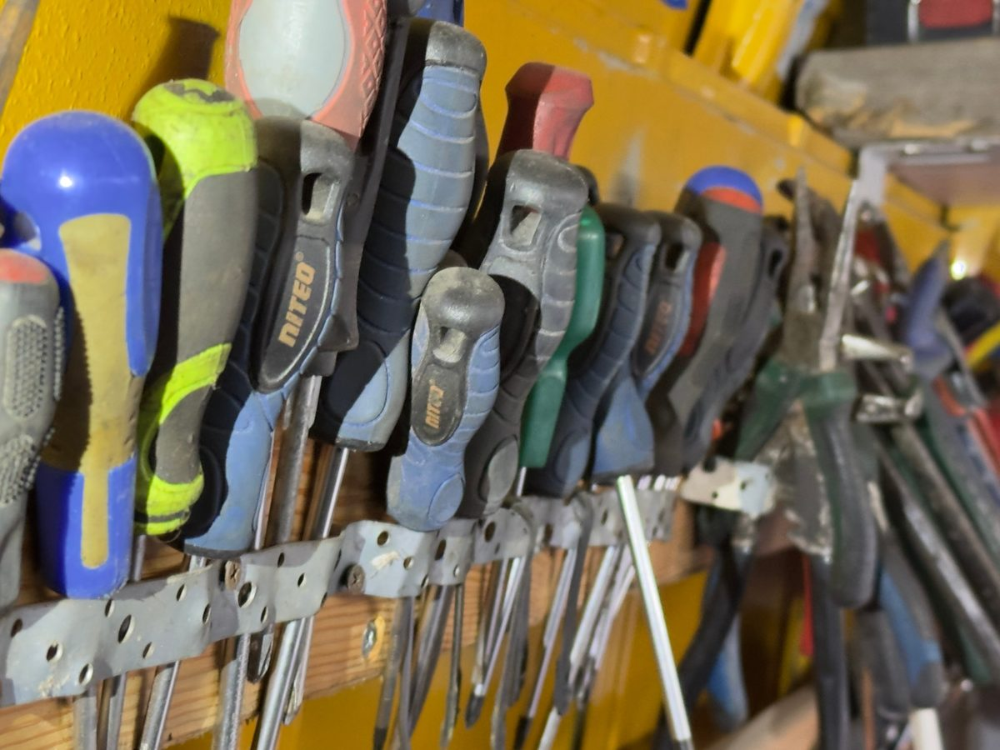

Dlaczego z nami
Całą dobę
Do awarii przyjeżdżamy 24/7 — także w nocy i w weekend.
Naprawa na miejscu
Kołek, łatka lub grzybek — dobieramy metodę do uszkodzenia.
Bezpieczeństwo
Po naprawie sprawdzamy szczelność i ciśnienie.
Co dokładnie robimy
Diagnoza
Oceniamy, czy opona nadaje się do naprawy.
Naprawa
Metodą odpowiednią do uszkodzenia.
Opona zastępcza
Gdy uszkodzony jest bok lub opona rozcięta.
Kontrola
Szczelność, ciśnienie, dokręcenie kół.

Trzy kroki do nowych opon
Zadzwoń lub napisz na WhatsApp
Podajesz adres, auto i rozmiar opon. Możesz od razu wysłać zdjęcie uszkodzenia.
Przyjeżdżamy na miejsce
Do awarii całą dobę, 7 dni w tygodniu. Na wymianę o umówionej godzinie.
Wymieniamy i jedziesz dalej
Montaż, wyważenie, kontrola ciśnienia. Wymiana kompletu trwa zwykle 30–45 minut.
Pytania o tę usługę
Czy każdą przebitą oponę da się naprawić?
Nie. Uszkodzenia boku, rozcięcia i rozwarstwienia dyskwalifikują oponę — wtedy doradzimy wymianę.
Czy mogę jechać na przebitej oponie?
Lepiej nie. Jazda bez powietrza niszczy oponę i może uszkodzić felgę.
Ile kosztuje naprawa?
Orientacyjne ceny są w cenniku w zakładce „Naprawa awaryjna”. Ostateczną cenę podajemy przed pracą.
Kilka aut pod jednym adresem?
Kilka aut pod jednym adresem to jeden dojazd i możliwy rabat. Zadzwoń albo napisz — przygotujemy wycenę.